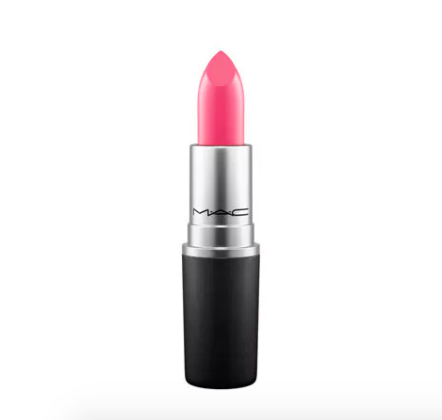

백투맥으로 받아왔습니다 :)
지난번에 골랐던 베가스볼트는 완전 실패였고
씨쉬어는 구매해봤는데 그저그래서 몇번 사용하다 말았고;;
임패션드는 아직 쓰고있는게 있어서 러스터링으로 결정
엄청 잘 어울리는 색은 아닌데
수시로 거울 안보고 슥슥 발라도 되는 립스틱 - 으로는 합격입니다
맥 웹사이트에는 레드톤이 살짝 가미된 핫핑크 라고 나와있는데
공홈 사진보다 훨 톤다운된 색인거 같아요
최근 오후시간대에 거울을 보면 깜짝 놀랄만큰 사람이 퀭해져서;;
이것저것 열심히 사다 나르고 있습니다;;